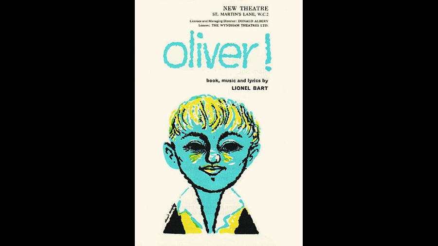

| Character | Actor |
|---|---|
| Oliver Twist | Keith Hamshere |
| Fagin | Ron Moody |
| Bill Sikes | Danny Sewell |
| Nancy | Georgia Brown |
| Mr. Brownlow | |
| Mr. Bumble | Paul Whitsun-Jones |
| Mrs. Corney | |
| Jack Dawkins, "The Artful Dodger" | Martin Horsey |
| Monks | |
| Noah Claypole | |
| Charlotte | |
| Mrs. Bedwin | |
| Mr. Grimwig | |
| Oliver's Mother | |
| Mrs. Thingummy, the old woman in workhouse | |
| Mr. Sowerberry, undertaker | Barry Humphries |
| Mrs. Sowerberry | |
| Singer in the Three Cripples tavern |
| Role | Person |
|---|---|
| Music | Lionel Bart |
| Lyrics | Lionel Bart |
| Director | Peter Coe |
Oliver! premiered in the West End at the New Theatre (now the Noël Coward Theatre) on 30 June 1960 and ran for 2,618 performances. Directed by Peter Coe, the choreographer was Malcolm Clare and costumes and scenery were by Sean Kenny. The original cast featured Ron Moody as Fagin, Georgia Brown as Nancy and Barry Humphries in the supporting role of Mr. Sowerberry, the undertaker. Keith Hamshere (the original Oliver) is now a Hollywood still photographer and Martin Horsey (the original Dodger) works as an actor/director and is the author of the play L'Chaim. Other boys alternated in the juvenile leads, including Davy Jones as the Artful Dodger. The cast also included Tony Robinson as one of the Workhouse boys/Fagin's Gang, and John Bluthal (now best known as The Vicar of Dibley's Frank Pickle) as Fagin. Former professional boxer Danny Sewell (brother of television actor George Sewell) was the original Bill Sikes, and remained in the role (including the original Broadway and US touring productions) for the best part of six years. Danny Sewell's main competitor at audition for the role of Sikes was Michael Caine, who later stated he "cried for a week" after failing to secure the part. Steve Marriott, later a famous rock singer with the Small Faces and Humble Pie, played workhouse boys including The Artful Dodger, and is featured on the original soundtrack LP.
The part of Nancy was originally written for Alma Cogan who, despite being unable to commit to the production, steered a great many producers to invest in it. Sid James turned down the part of Fagin as the timing of the production coincided with his own attempts to move away from the shady and roguish roles for which he was well known.